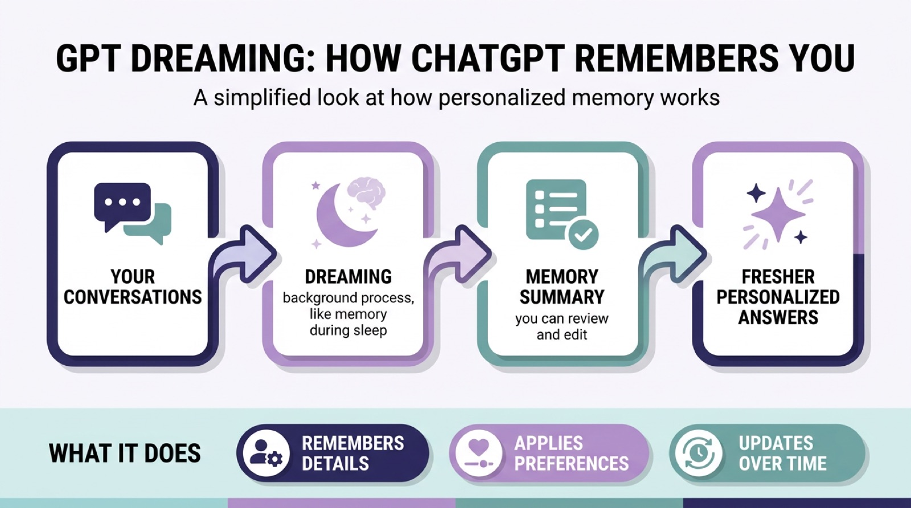

"Dreaming is the upgrade that turns ChatGPT into a colleague who was actually paying attention."
— How one explainer described ChatGPT's Dreaming memory system
"GPT dreaming" sounds like science fiction, but it has a very concrete meaning. In June 2026, OpenAI rebuilt how ChatGPT remembers you, and named the system Dreaming. By the end of this short guide you will understand exactly what that is: what "dreaming" means here (and what it definitely does not mean), how it works in plain language, a few everyday examples of it in action, and how you stay in control of it. No technical background needed.

What "GPT Dreaming" Actually Means
Dreaming is the name OpenAI gives to ChatGPT's memory system: a background process that automatically reviews your past conversations and synthesizes (combines and summarizes) an up-to-date picture of who you are and what you care about, so that future chats begin with the freshest, most relevant context. The crucial word is "background." You do not have to tell it to remember anything. While you are not chatting, the system quietly curates what it has learned, the way your brain consolidates the day's events while you sleep. That sleep analogy is exactly why OpenAI chose the word "dreaming."
A quick note on scope: in AI research, "dreaming" is also sometimes used for a different idea, where a model generates its own synthetic practice data in a "sleep-wake" cycle to keep training itself. That is a real but separate concept. When people say "GPT dreaming" today, they almost always mean ChatGPT's memory feature, which is what this guide focuses on.
Why It Matters
Before Dreaming, ChatGPT's memory was limited and largely manual. One explainer captured the old experience well: it was "like a colleague who took a few sticky notes during your meeting, but forgot everything that wasn't written down." You had to explicitly ask it to save facts, and anything you did not flag was lost between sessions. Dreaming flips that around: ChatGPT now builds and maintains an evolving understanding of you on its own. For anyone who uses an AI assistant regularly, that is the difference between re-introducing yourself every conversation and picking up where you left off.
How It Works, in Plain Language
You can picture Dreaming as a simple four-step loop:
- You have conversations. You chat with ChatGPT normally, about anything.
- It "dreams" in the background. Separately from the live chat, the system reviews your history and synthesizes a current memory of the important, durable facts and preferences, rather than storing every message word for word.
- You can see the result. What it has concluded about you is collected on a readable memory summary page.
- Future chats feel personalized. New conversations start already aware of that context, so answers fit you better.
OpenAI describes three concrete things the system gives you: a readable summary of what ChatGPT has synthesized about you, controls to add or update those details, and settings for which topics it should raise and when.
Examples: Dreaming in Everyday Use
The idea clicks fastest with examples. Three kinds of behavior show what Dreaming does:
- Remembering details (context continuity). If you mentioned weeks ago that you shoot with a particular camera, or that you are vegetarian, ChatGPT carries that forward without you repeating it. Ask for a recipe and it already cooks within your diet.
- Applying your preferences. It filters suggestions through what it knows about your tastes and constraints, so recommendations arrive pre-tailored rather than generic.
- Updating over time (temporal updates). This is the standout. OpenAI's own example: a memory that said "You are going to Singapore in July" is automatically revised to "You went to Singapore in July 2026" once the trip has passed. The memory ages with reality instead of going stale.
Remember This
Dreaming does not just store facts, it keeps them current. The Singapore example is the heart of the upgrade: a memory that updates itself from "going to" to "went to" is far more useful than a frozen sticky note, and it is what makes the assistant feel like it is genuinely keeping up with your life.
The Most Common Misconception
The word "dreaming" misleads people into thinking ChatGPT is somehow conscious, sleeping, or having experiences. It is not. Dreaming is a metaphor for a background computation that consolidates memories between chats; nothing more mystical is going on. The model is not aware and is not literally resting. The analogy is only about the timing and function, useful consolidation that happens away from the live conversation, similar to how human memory consolidation happens during sleep.
This is really a vivid case of something we explored in our piece on how the hard part of working with AI shifted from clever prompts to engineering the right context. Memory is context. Dreaming is ChatGPT doing a slice of that context engineering for you, automatically, instead of leaving it to you to manage by hand.
Staying in Control: Privacy and Practical Tips
Because the system forms memories on its own, the controls matter. The practical habits are simple: open the memory summary page now and then to see what ChatGPT believes about you, correct or remove anything wrong or outdated, and use the topic settings to steer what it should and should not bring up. Treat it like any system that holds personal context, review it periodically and do not assume it is always right. This is the same data-mindfulness we flagged among the privacy and accountability risks that come with generative AI: the convenience of automatic memory is real, and so is the responsibility to keep an eye on what is being stored about you.
Remember This
Automatic does not mean unaccountable. OpenAI made the synthesized memory reviewable and editable on purpose. The healthy default is to enjoy the personalization but periodically check the memory summary, exactly as you would review what any app has saved about you.
Where This Fits in the Bigger Picture
Memory is one of the quiet frontiers of useful AI. A model that forgets you after every chat can only ever be a clever stranger; one that remembers, and keeps that memory current, starts to function like a real assistant. Dreaming is OpenAI's bet on that shift, and a reported roughly fivefold drop in the compute it needs is what made it cheap enough to extend toward free users. It also points at where things are heading more broadly: the same persistent-context capability is what lets autonomous AI agents carry state across long, multi-step tasks. Understanding GPT dreaming, then, is not just about one ChatGPT feature. It is a first look at how AI systems are learning to remember, and why that changes how useful they can be.